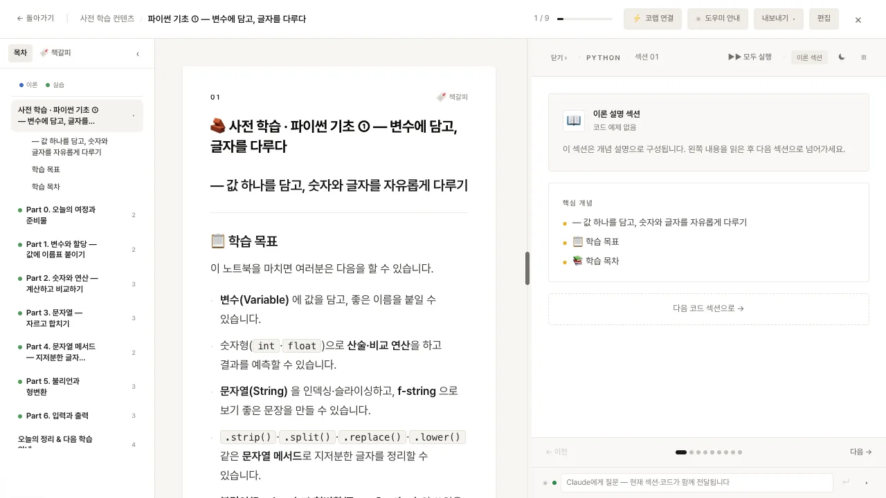
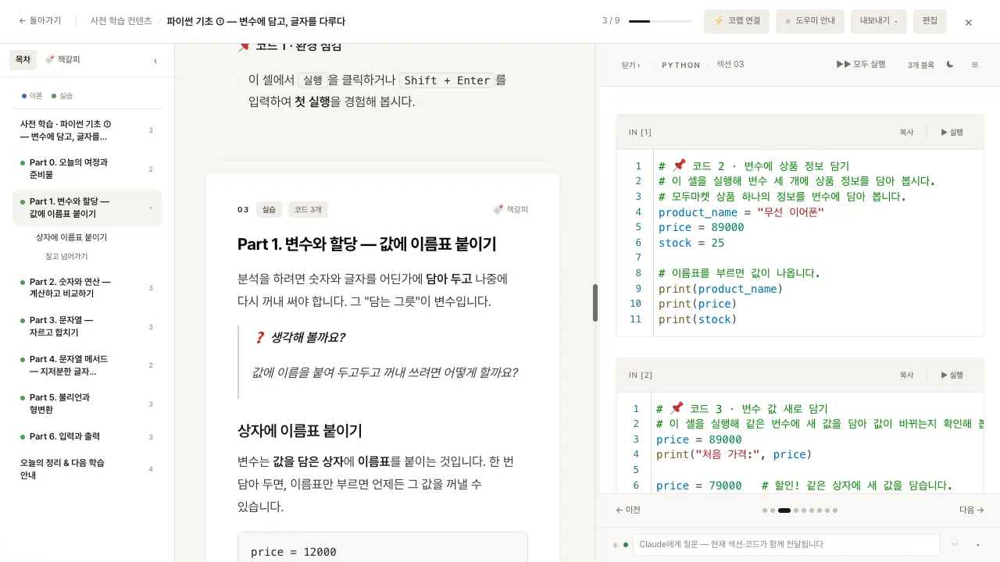
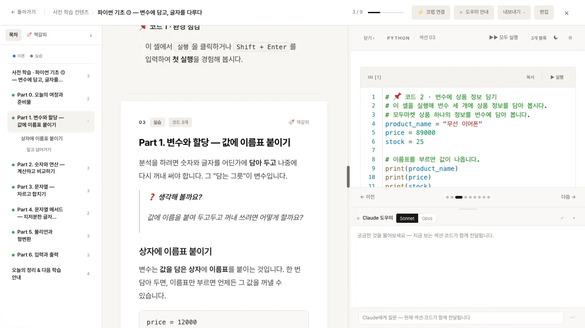
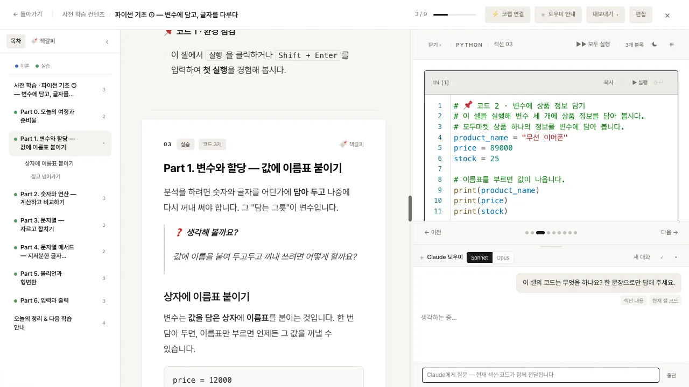

2026.04 ~ 현재
사내 LMS 개발과 운영
수강생이 교안을 읽고 코드를 실행하며 퀴즈와 과제를 제출하는 학습 플랫폼입니다. 5개 과정에서 운영하고 있습니다. 같은 구성으로 LMS 프로토타입을 만드는 에이전트 키트도 만들었습니다.
LMS 개발 에이전트 키트는 사내 에이전트 활용 사례 평가에서 가장 높은 점수인 1점(매출·비용 직접 연계)을 받았습니다.
- Claude Code
- Next.js
- Supabase
- Playwright
AI 에이전트로 부트캠프의 학습 플랫폼, 교안, 실습 데이터를 만들고 운영합니다.
에이전트에 일을 맡길 때 요구 사항과 권한 범위는 직접 정합니다.
에이전트가 낸 결과는 수용 테스트와 검사 스크립트, 별도의 평가 에이전트로 확인한 뒤에 반영합니다.




2026.04 ~ 현재
수강생이 교안을 읽고 코드를 실행하며 퀴즈와 과제를 제출하는 학습 플랫폼입니다. 5개 과정에서 운영하고 있습니다. 같은 구성으로 LMS 프로토타입을 만드는 에이전트 키트도 만들었습니다.
LMS 개발 에이전트 키트는 사내 에이전트 활용 사례 평가에서 가장 높은 점수인 1점(매출·비용 직접 연계)을 받았습니다.
2026.06 ~ 2026.09, 2026.11 개선
최근 14일의 AI 뉴스를 수집하고 검증해 발표 자료로 발행합니다. 검증을 통과한 항목은 엔티티와 관계로 정리해 지식 DB에 누적합니다. 지식 구조(온톨로지)는 정의 파일로 관리합니다. 발행을 검사하는 가드 훅과 지식 DB를 조회하는 MCP 서버도 만들었습니다.
사내 제1회 AX AI Agent 공모전에서 금상(1등)을 받았습니다.
통계표에서 가상 기록을 만드는 순서
2026.11
40일 해커톤에서 수강생이 분석할 데이터 3종을 실제 개인 기록 없이 만들었습니다. 정답표를 볼 수 없는 에이전트에게 분석 과제를 풀게 해서 자동 검사가 놓친 결함을 찾았습니다.
프로젝트 3건에서 같은 순서로 일했습니다.
요구 사항, 통과 기준, 에이전트가 접근해도 되는 범위를 구현 전에 정합니다.
작업의 성격에 맞춰 서브에이전트의 역할과 모델을 정합니다.
테스트와 검사 스크립트를 실제로 실행해 통과한 결과만 반영합니다. 방식을 비교할 때는 블라인드 평가를 다른 에이전트가 합니다.
프로젝트를 진행하면서 만든 스킬, 서브에이전트, 훅, 검사 스크립트, 문서입니다.
해서는 안 되는 일은 훅과 검사가 실행 전에 차단합니다.
하네스, 검사 스크립트, 별도의 검증 에이전트가 구현 결과를 검사합니다.
반복하는 절차는 스킬과 스크립트로 만들어 실행할 때마다 같은 순서로 진행합니다.
사람과 에이전트가 같은 문서를 읽습니다. 문서마다 근거 위치와 확인 시점을 기록합니다.
AI가 쓴 티가 나는 문장을 찾아 고치는 절차를 스킬로 만들었습니다.
실행 기록에서 실행, 에이전트, 역할 단위로 토큰, 비용, 실패를 확인합니다.
2024년에 핀인사이트에서 데이터 분석과 머신러닝을 강의했습니다. 2025년 12월부터는 모두의연구소에서 부트캠프 강의를 맡고 있습니다. 2026년 4월부터 수업에 필요한 플랫폼과 교안을 에이전트로 직접 만들기 시작했습니다.
2025.12 ~ 현재
교육퍼실리테이터팀, AI교육 퍼실리테이터
2024.05 ~ 2024.12
컨텐츠랩, 선임연구원